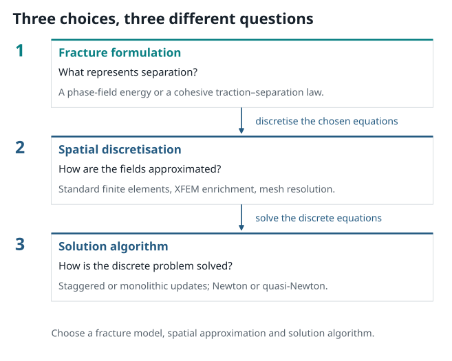

Crack Representations: Sharp, Cohesive, and Diffuse#
{kind=link}

Figure 1 A complete computational simulation requires three distinct engineering choices: the fracture formulation, the spatial discretization, and the nonlinear solver. Keeping these layers modular makes comparing methods clear and straightforward.#
How Should We Represent a Crack?#
Imagine dropping a ceramic cup or watching a car windshield crack after being struck by a pebble. In the real physical world, fracture is an abrupt geometric split: atomic bonds stretch until they snap, creating two brand-new surfaces.
When engineers attempt to model this on a computer, they face a classic dilemma: Should we represent the crack as a razor-sharp geometric boundary that literally slices our mesh in two, or can we represent the damaged material smoothly, like a continuous field of damage density?
In this chapter, we explore the three major ways computational mechanics represents cracking:
Sharp Interface Models (Classical LEFM): Treating the crack as an exact lower-dimensional boundary \(\Gamma\).
Cohesive-Zone Models (CZM): Treating the crack as a traction–separation law along prescribed interfaces.
Phase-Field Models (PFM): Regularising the crack as a continuous, diffuse damage band over a characteristic length \(\ell\).
The Starting Point: A Sharp Crack#
In classical linear elastic fracture mechanics (LEFM), a crack is modeled as an exact lower-dimensional geometric boundary \(\Gamma\) embedded inside a solid body \(\Omega\). A Griffith-type energy balance compares the bulk elastic strain energy, external work, and the energy required to create new crack surface:
Here:
\(u\) is the displacement field,
\(\psi(\varepsilon(u))\) is the elastic strain energy density,
\(G_c\) is the critical energy release rate (fracture toughness), and
\(\mathcal{H}^{d-1}(\Gamma)\) measures the crack surface area (or crack length in 2D).
The key advantage of the sharp crack approach is conceptual clarity: it represents a literal physical discontinuity. However, simulating evolving cracks with sharp models is numerically challenging: as the crack propagates, branches, or kinks, the finite-element mesh must be continuously updated and remeshed to conform to the moving geometric interface.
The energy balance principle originated with Griffith (1921) and was given its modern variational formulation for evolving cracks by Francfort and Marigo (1998).
Cohesive-zone models: separation on an interface#
A cohesive-zone model (CZM) places a constitutive traction–separation law on an interface. If \(\delta\) denotes displacement jump, a simple scalar picture is
The area below \(T(\delta)\) supplies an interface fracture energy. A CZM is especially natural when an interface is known in advance: an adhesive layer, a ply interface, or a prescribed material boundary. Its parameters can express a peak traction and a separation scale in addition to an energy.
The interface still needs to be represented numerically. It may coincide with element faces, embedded interface elements, or a tracked surface. A cohesive law is therefore a fracture formulation or constitutive law whose numerical representation is chosen separately. The classical computational formulation of Xu and Needleman (1994) is a standard reference.
Formulation and discretisation
A cohesive law can be coupled to several discretisations; it has a different physical idealisation from a diffuse crack-density regularisation.
XFEM: enrich an approximation space#
The extended finite-element method (XFEM) represents a discontinuity or a near-tip feature by enriching a conventional finite-element approximation. A schematic displacement approximation is
\(N_i\) are ordinary shape functions; \(H\) may encode a jump across a crack; and \(F_\alpha\) can encode near-tip asymptotic behaviour. The index sets \(J\) and \(K\) select enriched nodes. XFEM changes the spatial approximation, allowing a crack to cut through elements independently of the element-edge alignment.
XFEM can reduce repeated remeshing for propagating cracks, but brings its own implementation questions: enrichment support, integration of cut cells, conditioning, branch handling, and the geometry used to describe the crack. The foundational paper is Moes, Dolbow, and Belytschko (1999).
Phase field: replace a surface by a narrow band#
In a phase-field formulation, a scalar field \(d(x)\) spreads the crack over a band of width governed by a length \(\ell\). With the convention used here, \(d=0\) is intact and \(d=1\) is broken. A typical crack-density functional is
As \(\ell\) becomes small under appropriate refinement and modelling assumptions, this regularised functional approximates a sharp fracture surface. Crack propagation is represented by the evolution of a continuous field \(d\), whose diffuse band must be resolved on the mesh.
This is a regularised fracture formulation. It is commonly discretised with ordinary continuous finite elements, but the formulation and the discretisation are conceptually separate. The diffuse approach was developed for brittle fracture by Bourdin, Francfort, and Marigo (2000).
Comparing Crack Representations#
Each representation offers distinct advantages depending on the engineering application:
Method |
Geometric Representation |
Mesh Requirements |
Crack Branching & Merging |
Primary Engineering Applications |
|---|---|---|---|---|
Sharp Crack (LEFM) |
Exact lower-dimensional surface \(\Gamma\) |
Conforming mesh with tip singularity elements |
Requires remeshing at every crack extension step |
Standard fatigue crack propagation along known paths |
Cohesive Zone (CZM) |
Traction–separation interface law |
Interface elements along predefined element boundaries |
Predefined along mesh interfaces |
Delamination in composites, adhesive joints, masonry |
XFEM |
Enriched continuous displacement field |
Fixed background mesh with Heaviside and tip enrichments |
Requires level-set tracking for multiple crack fronts |
Crack growth without global remeshing on structured grids |
Phase Field (PFM) |
Continuous scalar damage field \(d(x) \in [0, 1]\) |
Standard finite elements (element size \(h < \ell\)) |
Handled naturally via energy minimization without tracking |
Complex crack topologies, branching, coalescence in 2D/3D |
When to Choose Phase-Field Fracture#
Phase-field methods have become widely adopted in modern computational mechanics because they transform a complex geometric interface tracking problem into the solution of coupled partial differential equations on a fixed mesh. The crack trajectory, initiation, branching, and coalescence emerge naturally from energy minimization without requiring ad hoc geometric tracking criteria.
Separating Formulation, Discretization, and Solver#
To reason clearly about any computational mechanics calculation, we maintain a clean separation between three levels:
Continuum Formulation:
The governing energy functional or constitutive equations (e.g., linear elasticity coupled to an AT1 or AT2 phase-field damage model).Spatial Discretization:
The mathematical approximation space and mesh topology used to discretize continuous fields (e.g., standard continuous linear triangular T3 elements).Nonlinear Solution Strategy:
The iterative numerical algorithm used to solve the coupled nonlinear system of equations (e.g., staggered alternating minimization, or monolithic Newton–Raphson).
This separation is modular: a phase-field formulation can be discretized using standard continuous Galerkin finite elements, and the resulting equations can be solved using either a staggered alternating loop or a monolithic Newton–Raphson solver.
Exercise: Identifying the Computational Layers#
Consider the following statement from a research paper:
“We simulate crack branching using an AT2 phase-field model on triangular finite elements solved with a staggered alternating minimization scheme.”
Break this down by identifying:
The fracture formulation.
The spatial discretization.
The nonlinear solver.
Solution
Fracture Formulation: The AT2 phase-field regularisation, which specifies the quadratic local dissipation function \(w(d) = d^2\) and degradation law \(g(d) = (1-d)^2\).
Spatial Discretization: Standard continuous triangular (T3) finite elements with piecewise linear shape functions.
Nonlinear Solver: A staggered (alternating minimization) algorithm that decouples the mechanical equilibrium and damage updates within each load increment.
Summary of Key Concepts#
Sharp vs. Diffuse: Sharp crack models treat cracks as surfaces of discontinuity; phase-field models diffuse the crack over a narrow zone of characteristic width governed by the length scale \(\ell\).
Energy Balance: In a phase-field model, the total energy consists of bulk elastic strain energy and surface fracture dissipation.
Modularity: Distinguishing formulation, discretization, and solver ensures clarity when comparing numerical results and computational costs.